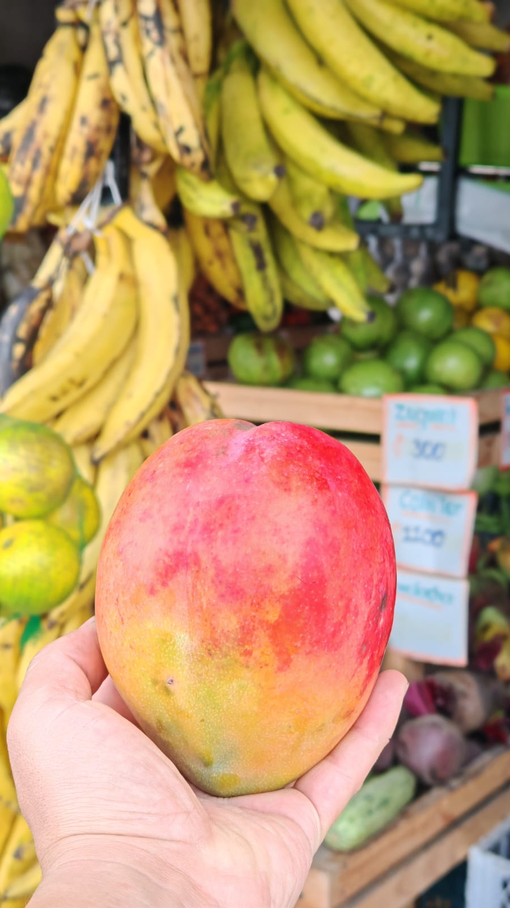
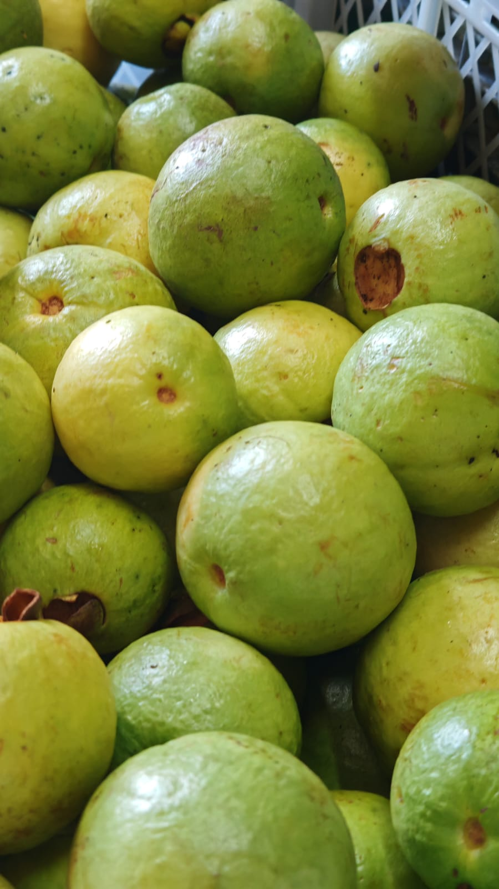
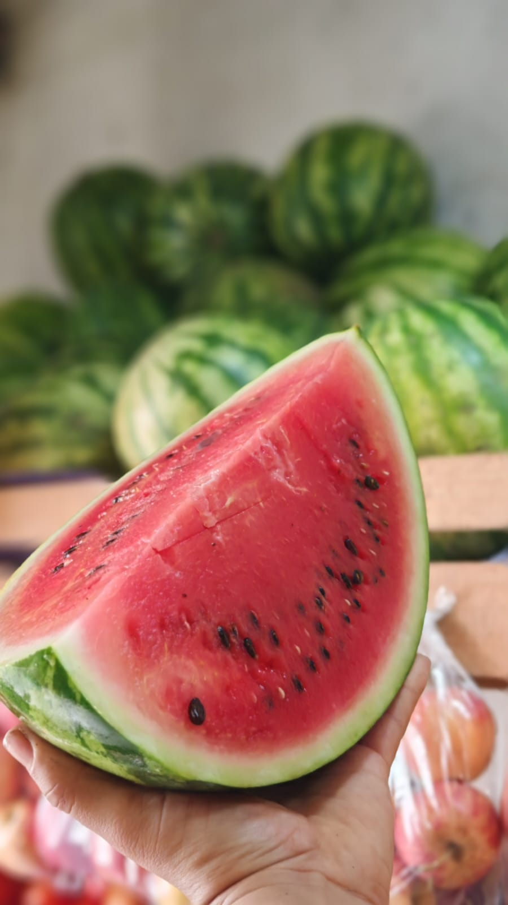

Bienvenidos
La Abuela Verdulería y frutería es un negocio familiar dedicado a la venta de frutas, verduras, legumbres, productos frescos y alimentos complementarios de la mejor calidad.
Ubicados en La Ilusión, Dulce Nombre de Cartago, trabajamos cada día para ofrecer alimentos frescos, precios justos y una atención cercana.
Nuestro compromiso es que cada familia pueda disfrutar alimentos saludables, frescos y accesibles.

Nuestra historia
La Abuela Verdulería y frutería nace en el año 2023, inspirada en el legado de Doña Evangelina, una mujer que enseñó que una buena alimentación es el primer paso para una vida sana.
El nombre La Abuela es un homenaje a los valores de trabajo, honestidad, servicio y bienestar familiar.
“La comida es salud. La mesa es unión. La frescura comienza en La Abuela.”


Nuestra misión
Ofrecer frutas, verduras y productos frescos de excelente calidad, promoviendo una alimentación saludable mediante un servicio cercano, honesto y accesible para las familias de Cartago.
Nuestra visión
Ser la verdulería de mayor confianza en la comunidad, reconocida por la frescura de sus productos, la atención personalizada y el compromiso con la salud.
Nuestros productos
Frutas y verduras frescas, seleccionadas con cuidado para su mesa.
Frutas frescas

Verduras

Temporada

Selección diaria

Color y sabor

Calidad

Frescura
Para la familia
¿Por qué elegirnos?
Frescura diaria
Productos seleccionados cuidadosamente para conservar sabor y calidad.
Precios justos
Buena relación entre calidad, frescura y precio.
Atención familiar
Servicio cercano, honesto y amable.
Lo que dicen nuestros clientes
“Siempre encuentro frutas frescas y buena atención.”
Cliente frecuente“Los productos se ven frescos y los precios son buenos.”
Vecina de Cartago“Excelente para comprar rápido lo necesario para la semana.”
Cliente de La IlusiónPedidos por WhatsApp
Consulte disponibilidad diaria y servicio a domicilio según cobertura.
Escribir por WhatsAppUbicación
La Ilusión, Dulce Nombre de Cartago, Costa Rica